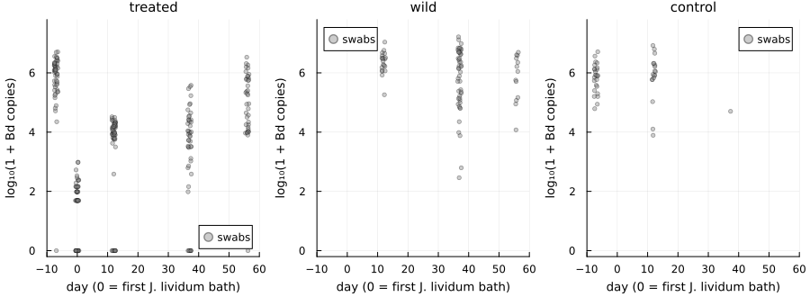
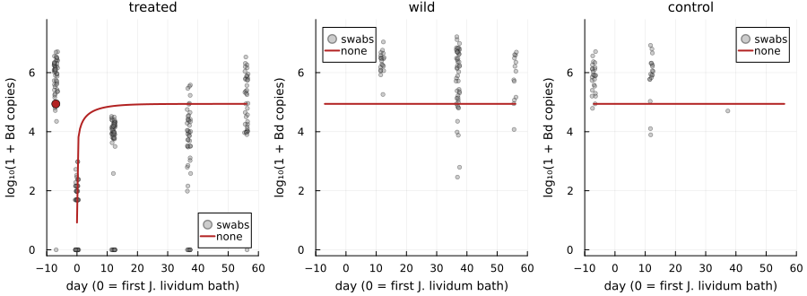
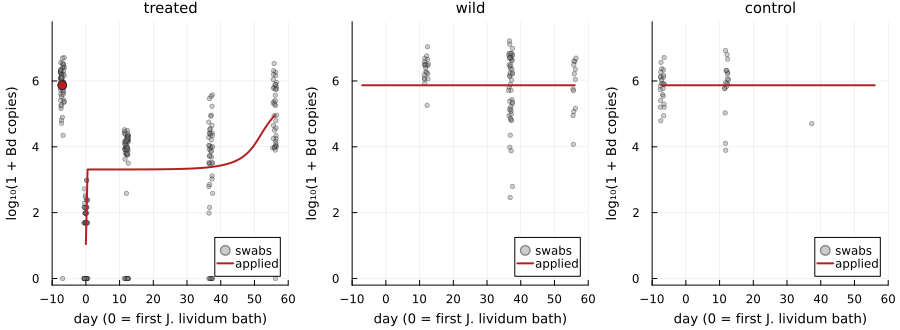
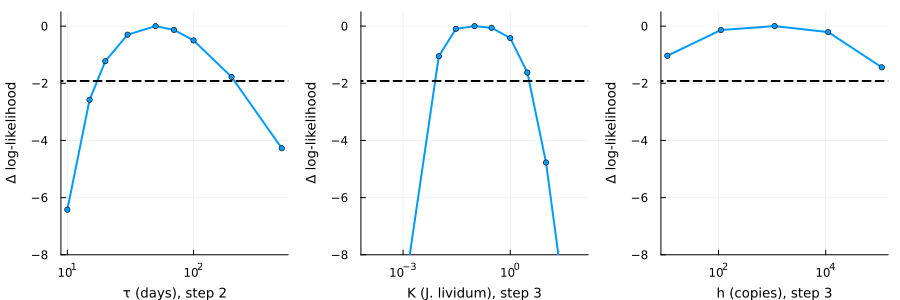

Fitting the frog load model to a field trial
- The trial
- The data
- The model
- Comparing the four
- How well are the parameters determined?
- What the fit shows
- Limits
- References
The trial
In July 2012, Knapp et al. (2022) treated subadult Sierra Nevada yellow-legged frogs (Rana sierrae) in Dusy Basin, California, during a Bd epizootic:
- days −7 to −1: a daily bath in the antifungal itraconazole;
- days 0 and 1: a bath in a culture of Janthinobacterium lividum, a skin bacterium that inhibits Bd, isolated from a frog in the same basin;
- release into the pond, then swabs on days 12, 37 and 56.
Untreated wild frogs and a group of control frogs (marked, never bathed) were swabbed at the same visits. Every swab was tested for Bd (ITS copies) and for J. lividum (genomic equivalents). Frogs were marked by group, not individually, so each visit samples the group, not the same animals.
This vignette fits the frog load equation of the package to these swabs. It asks why Bd stayed low on treated frogs for weeks, and whether J. lividum had anything to do with it.
[!IMPORTANT]
The load equation and the fits are new work in this package, not a published analysis. The data are from Knapp et al. (2022), CC BY 4.0, bundled in
data/knapp2022. The within-frog rater0comes from the Briggs et al. (2010) parameters in the package’s compendium; everything else is fitted here.
using Chytridiomycosis, Plots, Printf
using Distributions: median
default(linewidth = 2, size = (720, 380), legendfontsize = 8, guidefontsize = 9,
titlefontsize = 10, left_margin = 4Plots.mm, bottom_margin = 4Plots.mm)
swabs = load_knapp2022()
groups = (:treated, :wild, :control)
days = [-7, 0, 12, 37, 56]
nothingThe data
println("| Group | Day | Swabs | No Bd | Median Bd load | Median *J. lividum* |")
println("|---|---|---|---|---|---|")
for g in groups, d in days
s = filter(x -> x.group === g && x.day == d, swabs)
isempty(s) && continue
bd = [x.bd for x in s if !isnan(x.bd)]
jl = [x.jl for x in s if !isnan(x.jl)]
@printf("| %s | %d | %d | %d | %s | %s |\n", g, d, length(s), count(==(0), bd),
isempty(bd) ? "–" : @sprintf("%.3g", median(bd)),
isempty(jl) ? "–" : @sprintf("%.3g", median(jl)))
end| Group | Day | Swabs | No Bd | Median Bd load | Median J. lividum |
|---|---|---|---|---|---|
| treated | -7 | 51 | 1 | 1.13e+06 | – |
| treated | 0 | 52 | 20 | 48 | 0 |
| treated | 12 | 57 | 9 | 9.65e+03 | 155 |
| treated | 37 | 47 | 7 | 7.44e+03 | 2 |
| treated | 56 | 39 | 1 | 1.8e+05 | 0 |
| wild | 12 | 20 | 0 | 2.72e+06 | 50.5 |
| wild | 37 | 48 | 0 | 1.42e+06 | 4 |
| wild | 56 | 13 | 0 | 1.12e+06 | 0 |
| control | -7 | 25 | 0 | 8.16e+05 | – |
| control | 12 | 18 | 0 | 9.96e+05 | 1.53e+03 |
| control | 37 | 1 | 0 | 5.04e+04 | 158 |
Three things stand out:
- Treated frogs stayed low for weeks. Itraconazole took their loads from about a million copies to about 50. Twelve days after release they carried about 10,000, and still did on day 37, while wild frogs carried more than a million. Only by day 56 had they risen again.
- ***J. lividum* faded on everyone.** On treated frogs it fell from about 150 genomic equivalents on day 12 to almost none by day 56. It fell at a similar rate on wild frogs, which were never bathed.
- Controls carried more J. lividum than treated frogs (about 1,500 on day 12), and their loads were as high as those of wild frogs.
using Random: Xoshiro
function data_panel(g; title = string(g))
s = filter(x -> x.group === g && !isnan(x.bd), swabs)
jitter = 1.2 .* (rand(Xoshiro(1), length(s)) .- 0.5)
scatter([x.day for x in s] .+ jitter, log10.(1 .+ [x.bd for x in s]); ms = 2.5, alpha = 0.4,
color = :grey, label = "swabs", title = title, xlabel = "day (0 = first J. lividum bath)",
ylabel = "log₁₀(1 + Bd copies)", ylim = (-0.2, 7.8), xlim = (-10, 60))
end
plot(data_panel.(groups)...; layout = (1, 3), size = (900, 330))
The model
Each group is described by its median load $L$ (ITS copies per swab):
\[\frac{dL}{dt} = \iota + r_0 L - s(t)\,\frac{L}{h + L}.\]
\[\iota\]
is infection from outside the frog, by zoospores in the pond.\[r_0 = \eta\nu f - \sigma\]
is the within-frog rate of the Briggs et al. (2010) model. It is negative, so a frog’s own zoospores cannot sustain its load.\[s(t)\,L/(h + L)\]
is extra clearance. It is strongest when the load is small and saturates when the load is large.
Without extra clearance, every frog settles at $L^\ast = \iota/(-r_0)$, with a time scale of $1/|r_0| \approx 6$ days. That is the problem: on its own the equation would return treated frogs to the wild level within two weeks of release.
Untreated groups start at their equilibrium. Treated frogs start at a fitted load on day 0; their swabs on day −7, before treatment, are predicted by the untreated equilibrium. J. lividum falls exponentially from its day-12 level, at one rate on treated frogs and another on wild and control frogs. Swabs are lognormal around the median, and a swab with nothing detected is counted as below one copy.
mechanisms = (:none, :decay, :applied, :bacteria)
models = Dict(mech => KnappLoadModel(mech) for mech in mechanisms)
fits = Dict(mech => maximum_likelihood(models[mech]) for mech in mechanisms)
r0 = models[:none].r0
@printf("r0 = %.4f per day\n", r0)r0 = -0.1562 per dayThe fits below compare four explanations for $s(t)$, from simplest to most complex. Each is fitted to every swab, Bd and J. lividum alike, from eight starting points. In the figures, the red line is the fitted median load. Swabs with no Bd detected are plotted at 0 and count in the fit, so the median for treated frogs lies below the cloud of positive swabs.
fine = vcat(-7.0, 0.0:0.5:56.0)
function fit_panels(mech; label = string(mech))
pred = predicted_loads(models[mech], fits[mech].x; days = fine)
panels = map(groups) do g
p = data_panel(g)
y = getfield(pred, g).bd
keep = g === :treated ? (fine .>= 0) : trues(length(fine))
plot!(p, fine[keep], log10.(1 .+ y[keep]); color = :firebrick, label = label)
g === :treated && scatter!(p, [-7], [log10(1 + y[1])]; color = :firebrick, ms = 5,
label = "")
p
end
plot(panels...; layout = (1, 3), size = (900, 330))
end
nothingStep 1: no extra clearance
fit_panels(:none)
Treated frogs return to the common level by day 12 and stay there. The fit compromises: it sets that level between treated and untreated frogs, too low for wild frogs and too high for treated ones.
Step 2: suppression that wanes
Now treated frogs get extra clearance $s(t) = \Delta c\, e^{-t/\tau}$ from day 0 on, as leftover antifungal drug would provide. Untreated frogs get none.
fit_panels(:decay)Step 3: suppression from the applied bacteria
The extra clearance on treated frogs now follows their J. lividum: $s(t) = \Delta c\, J(t)/(J(t) + K)$. It is strong while the bacteria are abundant and fades as they disappear. Resident J. lividum on wild and control frogs is assumed to have no effect, as if the applied isolate differed from the residents (the assay cannot tell them apart).
fit_panels(:applied)
Step 4: every J. lividum protects
The same relation now applies to every frog, using each group’s own J. lividum. If the species protects in proportion to its abundance, the residents on wild and control frogs should protect them too.
fit_panels(:bacteria)Comparing the four
best = minimum(f.aic for f in values(fits))
println("| Step | Mechanism | Parameters | log-likelihood | AIC | ΔAIC | Starts within 0.1 of the best |")
println("|---|---|---|---|---|---|---|")
for (i, mech) in enumerate(mechanisms)
f = fits[mech]
@printf("| %d | `%s` | %d | %.1f | %.1f | %.1f | %d of %d |\n", i, mech, length(f.x),
f.loglik, f.aic, f.aic - best, count(>=(f.loglik - 0.1), f.logliks), length(f.logliks))
end| Step | Mechanism | Parameters | log-likelihood | AIC | ΔAIC | Starts within 0.1 of the best |
|---|---|---|---|---|---|---|
| 1 | none | 9 | -5745.4 | 11508.8 | 178.8 | 8 of 8 |
| 2 | decay | 12 | -5656.1 | 11336.3 | 6.2 | 8 of 8 |
| 3 | applied | 12 | -5653.0 | 11330.0 | 0.0 | 7 of 8 |
| 4 | bacteria | 12 | -5745.4 | 11514.8 | 184.8 | 7 of 8 |
fa, fd, fn = fits[:applied], fits[:decay], fits[:none]
@printf("Steps 2 and 3 improve the log-likelihood over step 1 by %.0f and %.0f units. ",
fd.loglik - fn.loglik, fa.loglik - fn.loglik)
@printf("In step 3, ι = %.3g copies per day, so untreated frogs sit at %.3g copies; ",
fa.estimates.ι, fa.estimates.ι / -r0)
@printf("treated frogs start at %.3g copies on day 0; and Bd varies between swabs with a ",
fa.estimates.L0)
@printf("standard deviation of %.2f on the natural-log scale (a factor of %.0f). ",
fa.estimates.σ, exp(fa.estimates.σ))
@printf("*J. lividum* halves every %.1f days on treated frogs and every %.1f days on wild and control frogs.\n",
fa.estimates.hT, fa.estimates.hW)Steps 2 and 3 improve the log-likelihood over step 1 by 89 and 92 units. In step 3, ι = 1.15e+05 copies per day, so untreated frogs sit at 7.38e+05 copies; treated frogs start at 10.1 copies on day 0; and Bd varies between swabs with a standard deviation of 2.94 on the natural-log scale (a factor of 19). J. lividum halves every 4.3 days on treated frogs and every 5.4 days on wild and control frogs.
- Extra clearance on treated frogs is essential. Steps 2 and 3 are far better than step 1, for three more parameters.
- Resident J. lividum does not protect. In step 4 the fit switches the effect off and ends where step 1 does. Controls carried more of the species than treated frogs and had high loads, so the abundance measured by this assay cannot by itself explain the protection.
- The applied bacteria fit slightly better than a waning drug (ΔAIC about 6), but the next section shows that this preference rests on very little.
How well are the parameters determined?
Profile likelihoods fix one parameter at a time and refit all the others. Values above the dashed line, 1.92 log-likelihood units below the best, form an approximate 95% confidence interval.
function profile_plot(fit, name, values; xlabel = string(name))
pl = profile_likelihood(fit, name, values)
plot(values, pl .- fit.loglik; xscale = :log10, marker = :circle, ms = 3, label = "",
xlabel = xlabel, ylabel = "Δ log-likelihood", ylim = (-8, 0.5))
hline!([-1.92]; color = :black, linestyle = :dash, label = "")
end
τs = [10, 15, 20, 30, 50, 70, 100, 200, 500]
Ks = [1e-4, 1e-3, 0.01, 0.03, 0.1, 0.3, 1, 3, 10, 100]
hs = fa.estimates.h .* [0.01, 0.1, 1, 10, 100]
plot(profile_plot(fd, :τ, τs; xlabel = "τ (days), step 2"),
profile_plot(fa, :K, Ks; xlabel = "K (J. lividum), step 3"),
profile_plot(fa, :h, hs; xlabel = "h (copies), step 3"); layout = (1, 3), size = (900, 300))
- Step 2: the suppression wanes on a time scale $\tau$ of between roughly 17 and 200 days.
- Step 3: the half-saturation $K$ is between about 0.01 and 3 genomic equivalents, at or below one cell’s worth of DNA on a swab. The fit says the bacteria protect fully until they are almost undetectable. The rise in Bd between days 37 and 56 coincides with the last J. lividum vanishing, and that coincidence is all step 3 uses.
- The saturating load $h$ is not identified. No group’s load passes through the saturating range slowly enough to measure it.
What the fit shows
- Without an extra effect on treated frogs, the load equation returns them to the wild level within two weeks. Something held their loads down for five to seven weeks after release.
- Waning suppression from leftover itraconazole and protection by the applied J. lividum explain the data about equally well. Every treated frog received both, and no group received only one, so this trial cannot separate them.
- If J. lividum is responsible, it is not because of the species’ abundance as measured by this assay. Controls carried more of it and were not protected, so it would have to be a property of the applied isolate, or of how it combines with the drug.
Limits
- Groups, not individuals. Swabs are treated as independent draws. Repeated swabs of the same frogs and the loss of frogs that died both bias the sample. Survivors may carry less Bd than the frogs that died.
- A fixed outside infection rate. $\iota$ is constant, although the zoospores in the pond depend on the loads of all frogs. Treating many frogs would lower it. The package’s load tipping model includes this feedback; the fit does not.
- Lab parameters. $r_0$ is taken from Briggs et al. (2010). ITS copies per swab are not sporangia, so $\iota$, $h$ and $\Delta c$ are on the swab scale and cannot be moved into the sporangium models without a conversion factor.
- A species-level assay. The J. lividum qPCR does not distinguish the applied isolate from resident strains.
- Few controls. Controls were rarely recaptured after day 12, and no group was given only itraconazole or only bacteria.
References
- Briggs CJ, Knapp RA, Vredenburg VT (2010) Enzootic and epizootic dynamics of the chytrid fungal pathogen of amphibians. Proceedings of the National Academy of Sciences 107:9695–9700. doi:10.1073/pnas.0912886107
- Knapp RA, Joseph MB, Smith TC, Hegeman EE, et al. (2022) Effectiveness of antifungal treatments during chytridiomycosis epizootics in populations of an endangered frog. PeerJ 10:e12712. doi:10.7717/peerj.12712